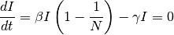

Generic 8: SIS - Reoccurring infections¶
This tutorial assumes that you have read Generic 7: SI - Lifelong infection and Generic 1: SIR - Simple single-node outbreak.
Similar to the SIRS model, the infected individuals return to the susceptible state. This model is appropriate for diseases that commonly have repeat infections, for example, the common cold (rhinoviruses), or sexually transmitted diseases like gonorrhea or chlamydia. For this model, we can analytically solve the ordinary differential equation (ODE) to understand the dynamics.
For simplicity, the following ODE model ignores the vital process (birth and death):

At equilibrium, solving:

There are two equilibrium states for the SIS model, the first is (disease free state), and the second is:

For disease to spread, we need to have  . Therefore, similar to the
previously described concept of the basic reproductive number, when
. Therefore, similar to the
previously described concept of the basic reproductive number, when  ,
the disease will spread and approach the second steady state; otherwise, it will eventually
reach the disease-free state.
,
the disease will spread and approach the second steady state; otherwise, it will eventually
reach the disease-free state.
Demographics inputs¶
This tutorial uses generic_scenarios_demographics file for demographics input. You can view the complete demographics file at <path_to_directory>ScenariosInputFiles where <path_to_directory> is the location where you installed the Quick Start. For more information on demographics files, see Demographics file structure and parameters.
Key configuration parameters¶
The tutorial simulates a sexually-transmitted disease using the SIS model in a hypothetical closed community over a 10-year period. The infectious duration is 25 days, and the basic reproductive number is 1.2.
You can view the complete config.json in the <path_to_directory>ScenariosGeneric08_SIS directory where <path_to_directory> is the location where you installed the Quick Start.
Demographics parameter¶
Set Enable_Vital_Dyanamics to 0. This will disable vital dynamics (birth and death) in the simulation. For more information, see Demographics parameters.
SIS model parameters¶
The generic simulation type uses an SEIR model by default. However, it can be modified to an SIS model with the following configurations: no incubation period and no immunity. For more information, see General disease parameters.
Set the following parameters:
- Set Base_Incubation_Period to 0.
- Set Incubation_Period_Distribution to “FIXED_DURATION.”
- Set Enable_Immunity to 0.
Disease parameters¶
As demonstrated previously, the spread of disease in the SIS model depends on  (set by
base infectivity) and
(set by
base infectivity) and  which are set by duration of infection. For more information,
see General disease parameters.
which are set by duration of infection. For more information,
see General disease parameters.
Set the following parameters:
- Set Base_Infectivity to 0.048.
- Set Base_Infectious_Period to 25.
- Set Infectious_Period_Distribution to “EXPONENTIAL_DURATION.”
Simulation duration parameters¶
The simulation is run for 3 months with a 1-day time step. For more information, see Simulation setup parameters.
Set the following parameters:
- Set Simulation_Timestep to 1.
- Set Simulation_Duration to 3650.
Interventions¶
You can view the complete campaign.json in the <path_to_directory>ScenariosGeneric08_SIS directory where <path_to_directory> is the location where you installed the Quick Start.
Initial outbreak¶
This simulation uses an OutbreakIndividual event at day 1 to provide the initial seeding. For more information, see OutbreakIndividual parameters.
{
"Use_Defaults": 1,
"Campaign_Name": "Initial Seeding",
"Events": [{
"Event_Coordinator_Config": {
"Intervention_Config": {
"Antigen": 0,
"Genome": 0,
"Outbreak_Source": "PrevalenceIncrease",
"class": "OutbreakIndividual"
},
"Target_Demographic": "Everyone",
"Demographic_Coverage": 0.0005,
"class": "StandardInterventionDistributionEventCoordinator"
},
"Event_Name": "Outbreak",
"Nodeset_Config": {
"class": "NodeSetAll"
},
"Start_Day": 1,
"class": "CampaignEvent"
}]
}
Run the simulation¶
Run the simulation and generate graphs of the simulation output. For more information, see How to run Quick Start simulations.
Note
Because the EMOD model is stochastic, your graphs may appear slightly different from those given below.
Simulation output graphs¶
The following figure shows the growth of an outbreak over time that eventually approaches steady state. You can compare the fraction of infected people with the anticipated value based on the previous calculation. If we have a reproductive number of 1.2, the infected fraction at equilibrium will be 1 - (1/1.2) ~ 17%.

Figure 1: Outbreak approaching steady-state
Exploring the model¶
You can change the Base_Infectivity value to alter the basic reproductive number (R0 >1 and R0<1) to observe the endemic state behavior.